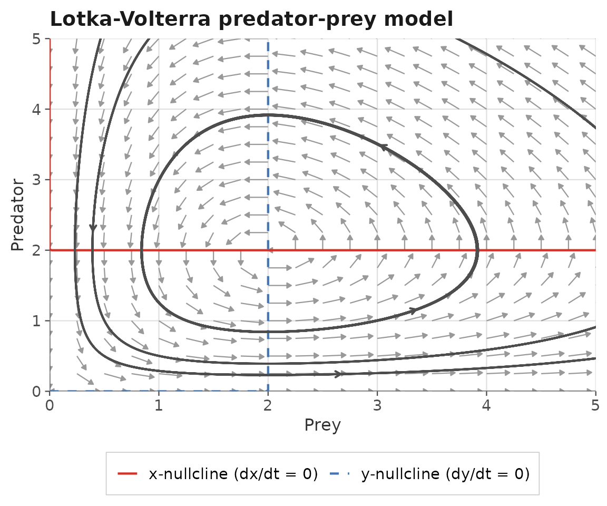
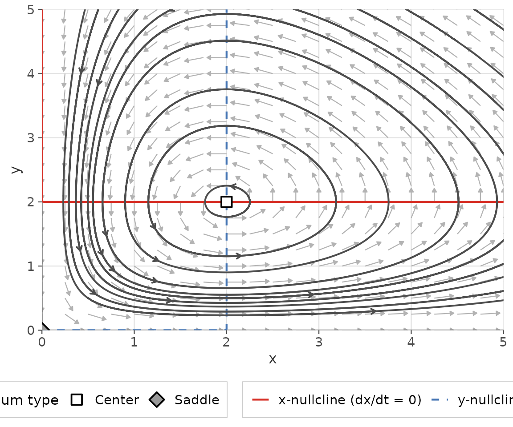
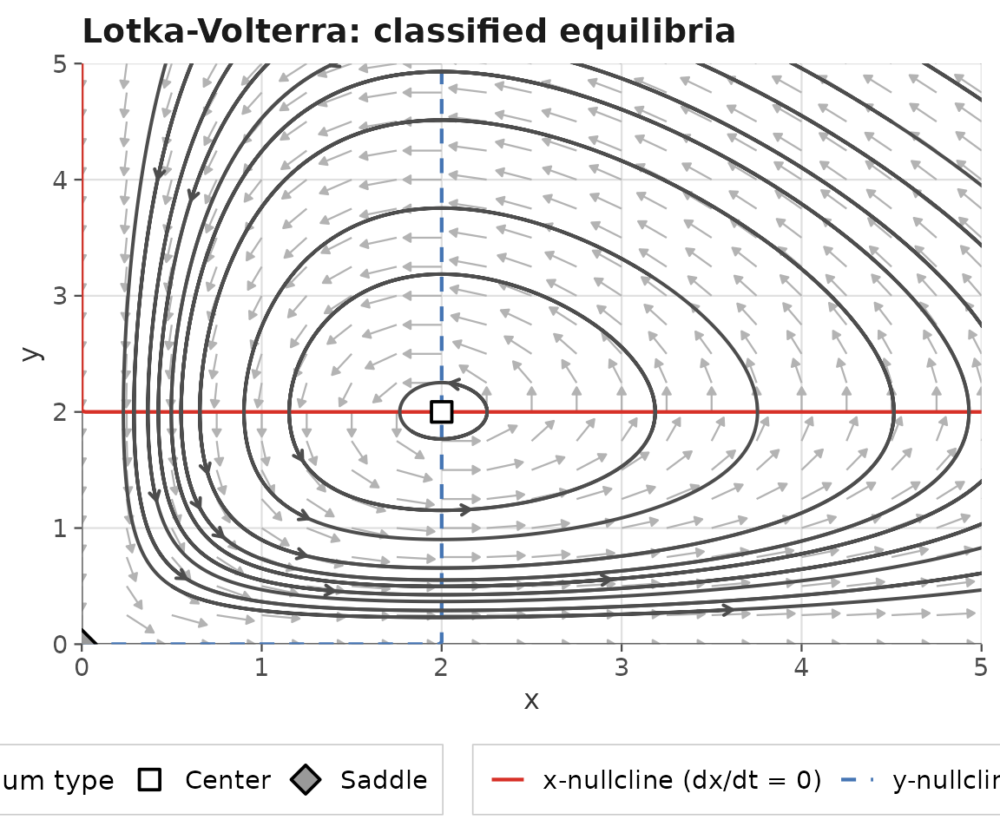
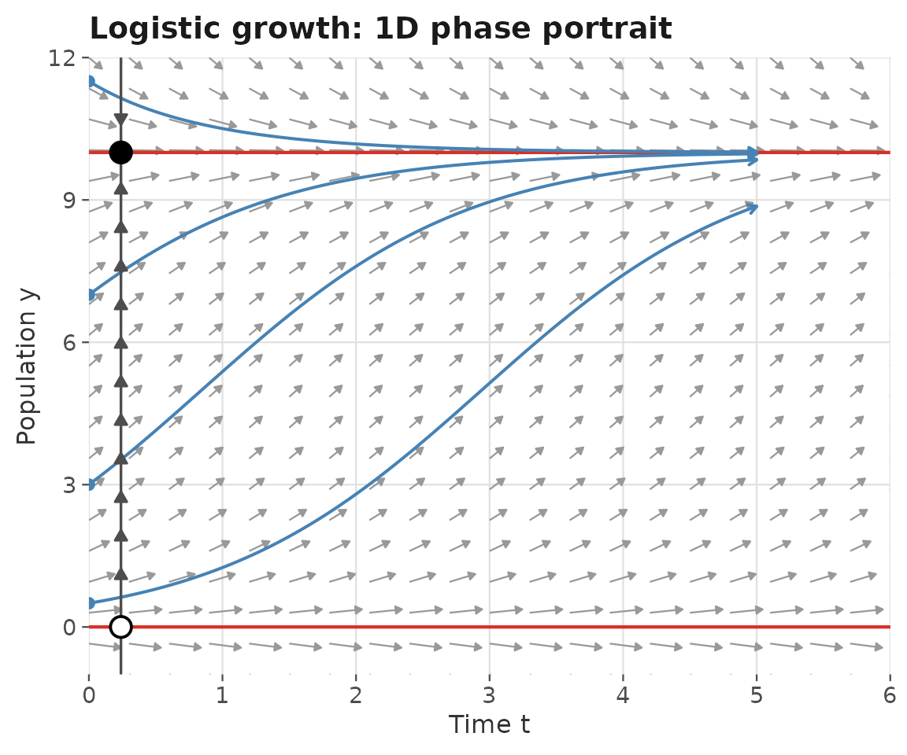
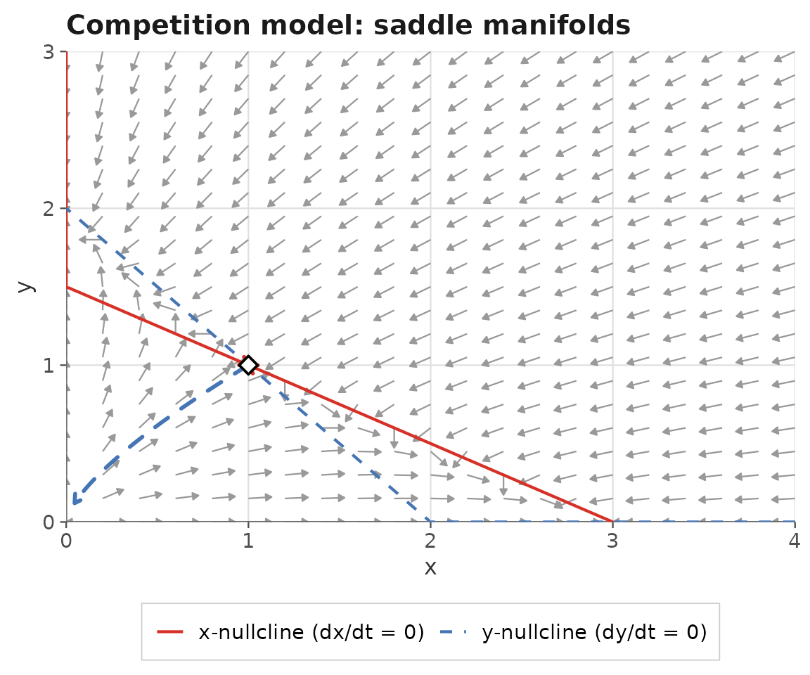

What is ggphasr?
ggphasr provides tools for qualitative analysis
of one- and two-dimensional autonomous ordinary differential equation
(ODE) systems using phase plane methods. It is a modern
successor to the phaseR
package (Grayling, 2014), with two key improvements:
- All visualizations are produced with ggplot2 and its extensions, making every plot fully customizable with standard ggplot2 syntax.
- The package is distributed via GitHub rather than CRAN, ensuring it remains installable regardless of CRAN archival policies.
ggphasr is designed for students and
instructors in applied mathematics, mathematical modeling,
differential equations, and dynamical systems courses. Plots compose
naturally using the + operator — the same way all ggplot2
plots are built — so students already familiar with ggplot2 can
immediately adapt and extend any phase portrait.
ODE conventions
ggphasr accepts ODE functions in two calling
conventions.
Convention A — deSolve-compatible (recommended):
my_ode <- function(t, y, parameters) {
# y[1] = x, y[2] = y (for 2D systems)
# parameters = named numeric vector
list(c(
f(y[1], y[2]), # dx/dt
g(y[1], y[2]) # dy/dt
))
}Convention B — simplified, for quick exploration:
# 2D:
my_ode <- function(x, y, parameters = NULL) c(dx, dy)
# 1D:
my_ode <- function(y, parameters = NULL) dyThe calling convention is detected automatically from the function’s
argument names, so both styles work with all ggphasr
functions. Convention A is directly compatible with
deSolve::ode().
The composable workflow
The core workflow builds a phase portrait layer by layer using
+, just like standard ggplot2:
lv_params <- c(alpha = 1, beta = 0.5, delta = 0.5, gamma = 1)
gg_flow_field(
ode_lotka_volterra,
xlim = c(0, 5),
ylim = c(0, 5),
parameters = lv_params,
xlab = "Prey",
ylab = "Predator",
title = "Lotka-Volterra predator-prey model"
) +
gg_nullclines(
ode_lotka_volterra,
xlim = c(0, 5),
ylim = c(0, 5),
parameters = lv_params,
legend_position = "bottom"
) +
gg_trajectory(
ode_lotka_volterra,
y0 = matrix(c(0.5, 0.5,
1.0, 3.0,
3.5, 0.5,
3.0, 3.5),
ncol = 2, byrow = TRUE),
xlim = c(0, 5),
ylim = c(0, 5),
parameters = lv_params,
t_end = 25,
color = "grey30",
add_start_point = FALSE
)
Each function in this chain has a specific role:
-
gg_flow_field()— creates the base ggplot object with direction arrows showing the vector field at each grid point. It returns a completeggplotobject. -
gg_nullclines()— adds the x-nullcline (where , red) and y-nullcline (where , blue). Returns a list of ggplot2 layers. -
gg_trajectory()— numerically integrates the ODE from the supplied initial conditions usingdeSolveand adds the solution paths. Returns a list of ggplot2 layers.
Because gg_nullclines() and gg_trajectory()
return layer lists rather than complete ggplot objects, they compose
naturally with + just as any ggplot2 geom would.
The all-in-one wrapper
For quick exploration, gg_phase_plane() produces a
complete phase portrait — flow field, nullclines, trajectories from a
grid of initial conditions, and classified equilibria — in a single
call:
result <- gg_phase_plane(
ode_lotka_volterra,
xlim = c(0, 5),
ylim = c(0, 5),
parameters = lv_params,
legend_position = "bottom"
)
result$plot
gg_phase_plane() returns a named list with two
components:
-
$plot— the ggplot object, which can be further customized with+ -
$equilibria— a tidy data frame of classified equilibria
result$equilibria[, c("x", "y", "classification", "tr", "det")]
#> x y classification tr det
#> 1 0 0 Saddle 0 -1
#> 2 2 2 Center 0 1The add_layer() function adds ggplot2 layers to the
result while preserving $equilibria:

1D systems
For one-dimensional systems, system = "one.dim" switches
all functions to phase line mode. gg_phase_portrait() adds
the traditional phase line with directional arrows and stability
markers:
gg_flow_field(
ode_logistic,
xlim = c(0, 6),
ylim = c(-1, 12),
system = "one.dim",
parameters = c(r = 1, K = 10),
xlab = "Time t",
ylab = "Population y",
title = "Logistic growth: 1D phase portrait"
) +
gg_nullclines(
ode_logistic,
xlim = c(0, 6),
ylim = c(-1, 12),
system = "one.dim",
parameters = c(r = 1, K = 10)
) +
gg_trajectory(
ode_logistic,
y0 = list(c(0.5), c(3), c(7), c(11.5)),
xlim = c(0, 6),
ylim = c(-1, 12),
system = "one.dim",
parameters = c(r = 1, K = 10),
t_end = 5,
color = "steelblue"
) +
gg_phase_portrait(
ode_logistic,
ylim = c(-1, 12),
xlim = c(0, 6),
parameters = c(r = 1, K = 10)
)
Equilibrium analysis
find_equilibrium() and
classify_equilibrium() provide numerical tools for locating
and classifying equilibria:
# Find equilibria by grid search
eq_list <- find_equilibrium(
ode_lotka_volterra,
y0 = NULL,
xlim = c(0, 5),
ylim = c(0, 5),
parameters = lv_params
)
# Classify each equilibrium
do.call(rbind, lapply(eq_list, function(eq) {
classify_equilibrium(ode_lotka_volterra,
equilibrium = eq,
parameters = lv_params)
}))[, c("x", "y", "classification", "tr", "det")]
#> x y classification tr det
#> 1 0 0 Saddle 0 -1
#> 2 2 2 Center 0 1Stable and unstable manifolds
gg_manifolds() draws the stable and unstable manifolds
of saddle points, which organize the phase plane into basins of
attraction:
eq <- find_equilibrium(ode_example_11, y0 = c(0.8, 0.8))
eq_cl <- classify_equilibrium(ode_example_11, equilibrium = eq[[1L]])
gg_flow_field(ode_example_11,
xlim = c(0, 4),
ylim = c(0, 3),
title = "Competition model: saddle manifolds") +
gg_nullclines(ode_example_11,
xlim = c(0, 4),
ylim = c(0, 3),
legend_position = "bottom") +
gg_manifolds(ode_example_11,
equilibrium = eq[[1L]],
eq_classified = eq_cl,
t_manifold = 5)
#> DLSODA- Warning..Internal T (=R1) and H (=R2) are
#> such that in the machine, T + H = T on the next step
#> (H = step size). Solver will continue anyway.
#> In above message, R1 = -3.96058, R2 = -1.90518e-16
#>
#> DLSODA- Warning..Internal T (=R1) and H (=R2) are
#> such that in the machine, T + H = T on the next step
#> (H = step size). Solver will continue anyway.
#> In above message, R1 = -3.96058, R2 = -1.90518e-16
#>
#> DLSODA- Warning..Internal T (=R1) and H (=R2) are
#> such that in the machine, T + H = T on the next step
#> (H = step size). Solver will continue anyway.
#> In above message, R1 = -3.96058, R2 = -1.90518e-16
#>
#> DLSODA- Warning..Internal T (=R1) and H (=R2) are
#> such that in the machine, T + H = T on the next step
#> (H = step size). Solver will continue anyway.
#> In above message, R1 = -3.96058, R2 = -1.52334e-16
#>
#> DLSODA- Warning..Internal T (=R1) and H (=R2) are
#> such that in the machine, T + H = T on the next step
#> (H = step size). Solver will continue anyway.
#> In above message, R1 = -3.96058, R2 = -1.52334e-16
#>
#> DLSODA- Warning..Internal T (=R1) and H (=R2) are
#> such that in the machine, T + H = T on the next step
#> (H = step size). Solver will continue anyway.
#> In above message, R1 = -3.96058, R2 = -1.26208e-16
#>
#> DLSODA- Warning..Internal T (=R1) and H (=R2) are
#> such that in the machine, T + H = T on the next step
#> (H = step size). Solver will continue anyway.
#> In above message, R1 = -3.96058, R2 = -1.26208e-16
#>
#> DLSODA- Warning..Internal T (=R1) and H (=R2) are
#> such that in the machine, T + H = T on the next step
#> (H = step size). Solver will continue anyway.
#> In above message, R1 = -3.96058, R2 = -1.26208e-16
#>
#> DLSODA- Warning..Internal T (=R1) and H (=R2) are
#> such that in the machine, T + H = T on the next step
#> (H = step size). Solver will continue anyway.
#> In above message, R1 = -3.96058, R2 = -1.00913e-16
#>
#> DLSODA- Warning..Internal T (=R1) and H (=R2) are
#> such that in the machine, T + H = T on the next step
#> (H = step size). Solver will continue anyway.
#> In above message, R1 = -3.96058, R2 = -1.00913e-16
#>
#> DLSODA- Above warning has been issued I1 times.
#> It will not be issued again for this problem.
#> In above message, I1 = 10
#>
#> DLSODA- At T (=R1), too much accuracy requested
#> for precision of machine.. See TOLSF (=R2)
#> In above message, R1 = -3.96058, R2 = nan
#> 
Built-in ODE systems
ggphasr includes 27 built-in ODE systems ready to use
without writing any equations:
1D growth models (4):
ode_exponential(), ode_logistic(),
ode_monomolecular(), ode_von_bertalanffy()
Classical 2D models (8):
ode_lotka_volterra(), ode_sir(),
ode_van_der_pol(), ode_simple_pendulum(),
ode_competition(), ode_toggle(),
ode_morris_lecar(), ode_lindemann()
Textbook examples (15):
ode_example_01() through ode_example_15() — a
library of 1D and 2D systems covering all common equilibrium types
(stable/unstable nodes, spirals, centers, saddles, and limit
cycles).
All built-in systems use Convention A and can be passed directly to
any ggphasr plotting or analysis function.
Function reference
Plotting
| Function | Returns | Description |
|---|---|---|
gg_flow_field() |
ggplot |
Direction/velocity field |
gg_nullclines() |
layer list | Nullcline curves |
gg_trajectory() |
layer list | Solution trajectories |
gg_phase_portrait() |
layer list | 1D phase line |
gg_time_series() |
ggplot |
Time-series plots |
gg_manifolds() |
layer list | Stable/unstable manifolds |
gg_phase_plane() |
ggphasr_result |
All-in-one wrapper |
Analysis
| Function | Returns | Description |
|---|---|---|
find_equilibrium() |
list | Newton–Raphson root-finding |
classify_equilibrium() |
data frame | Stability classification |
add_layer() |
ggphasr_result |
Add layers to a result object |
Further reading
The three topic vignettes provide full mathematical exposition and detailed worked examples:
# One-dimensional systems: phase lines, logistic growth, stability
vignette("one-dimensional-systems", package = "ggphasr")
# Two-dimensional systems: phase planes, nullclines, limit cycles
vignette("two-dimensional-systems", package = "ggphasr")
# Equilibrium analysis: Jacobian, trace-determinant, manifolds
vignette("equilibrium-analysis", package = "ggphasr")References
Grayling MJ (2014). phaseR: An R Package for Phase Plane Analysis of Autonomous ODE Systems. The R Journal 6(2): 43–51. https://doi.org/10.32614/RJ-2014-023
Strogatz SH (2015). Nonlinear Dynamics and Chaos (2nd ed.). Westview Press.